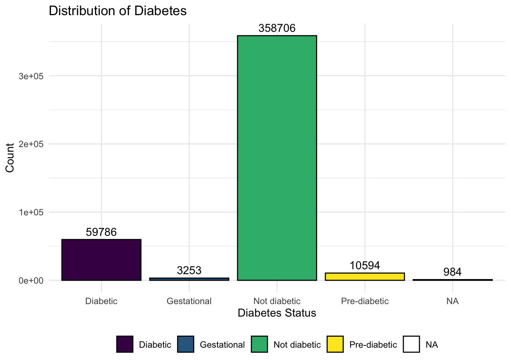
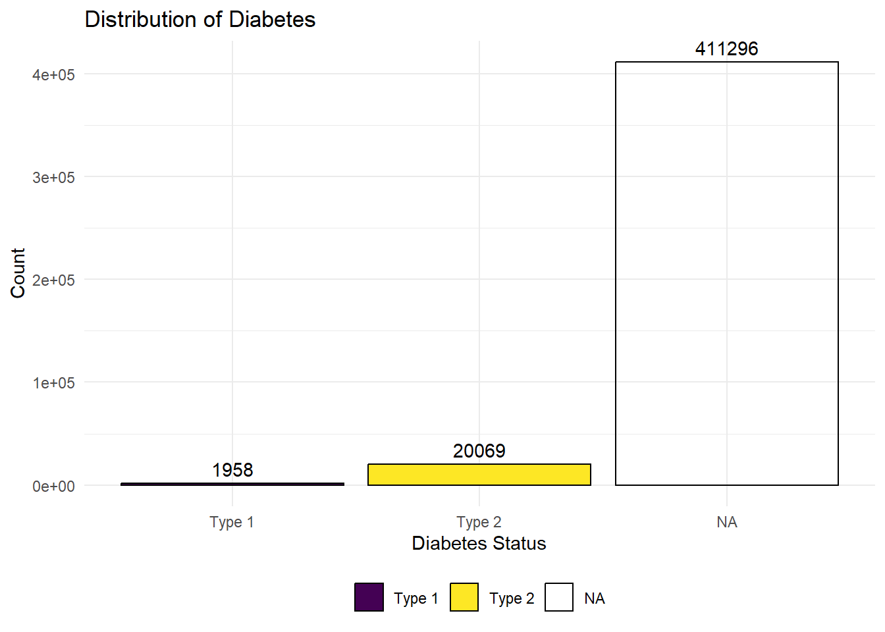
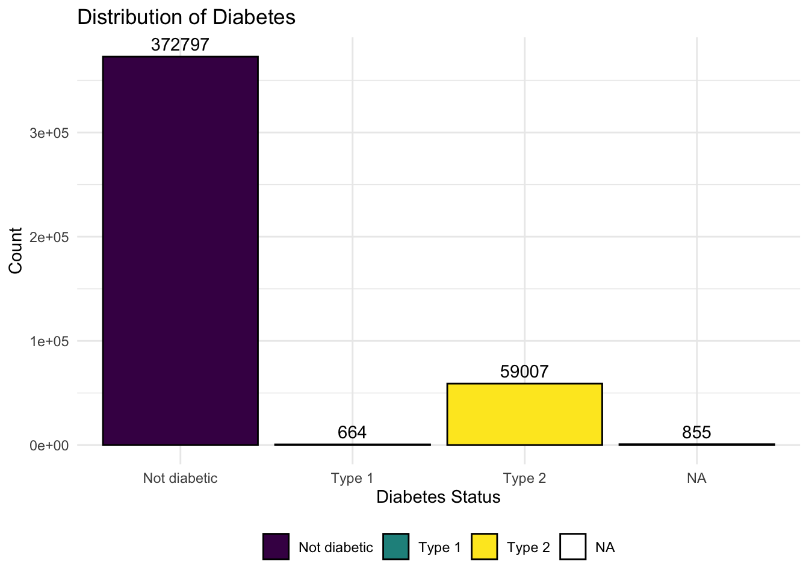
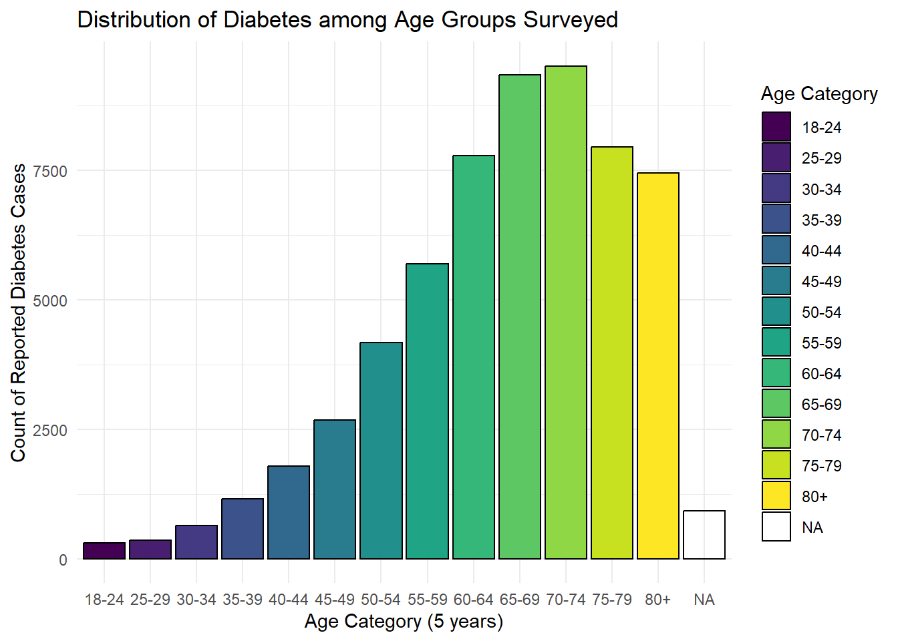
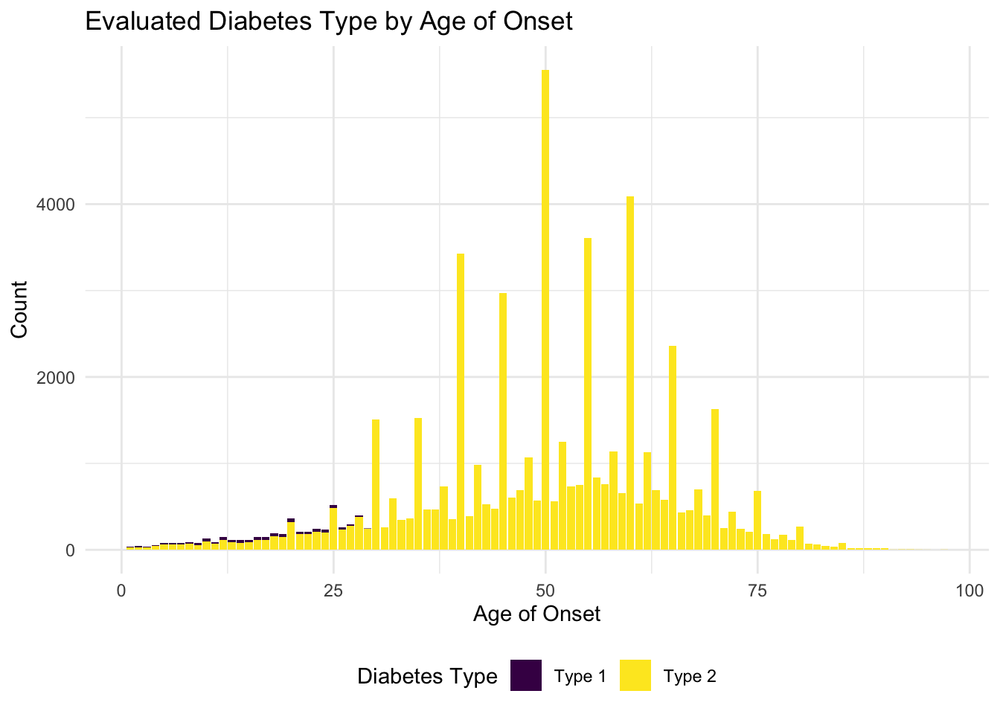

Basic Diabetes Distribution
Defining Diabetes
has_diabetes: This variable describes
the people in the survey who responded after being asked the question,
“Have you ever been told you had diabetes?”
diab_type: This variable comes directly
from the dataset, where respondents who were diabetic per the
has_diabetes question were asked “What type of diabetes do
you have?”
eval_type: Due to the missing data for
diab_type, we created another variable
eval_type that classifies a respondent to have type II
diabetes if the respondent was older than 30, not pregnant, and were
diabetic as per the has_diabetes question. We classified a
respondent to have type I diabetes if the respondent was younger than 30
and were diabetic as per the has_diabetes question.
diabetes_dist = function(df, var) {
df |>
group_by({{ var }}) |>
summarize(count = n()) |>
knitr::kable()
}
diabetes_plot = function(df, var) {
diabetes_df |>
ggplot(aes(x = {{ var }})) +
geom_bar(aes(fill = factor({{ var }})), color = "black", na.rm = FALSE) +
geom_text(
stat = "count", # Use the count statistic for frequencies
aes(label = ..count..), # Access the count directly
vjust = -0.5, # Adjust position of labels above the bars
na.rm = FALSE
) +
labs(
title = "Distribution of Diabetes",
x = "Diabetes Status",
y = "Count",
fill = as.character(rlang::ensym(var))
) +
theme_minimal() +
theme(legend.position="bottom", legend.title = element_blank())
}Diabetes Status (has_diabetes)
Table
diabetes_dist(df = diabetes_df, var = has_diabetes)| has_diabetes | count |
|---|---|
| Diabetic | 59786 |
| Gestational | 3253 |
| Not diabetic | 358706 |
| Pre-diabetic | 10594 |
| NA | 984 |
Graph
diabetes_plot(df = diabetes_df, var = has_diabetes)
Reported Type (diab_type)
Table
diabetes_dist(df = diabetes_df, var = diab_type)| diab_type | count |
|---|---|
| Type 1 | 1958 |
| Type 2 | 20069 |
| NA | 411296 |
Graph
diabetes_plot(df = diabetes_df, var = diab_type)
Evaluated Type (eval_type)
Table
diabetes_dist(df = diabetes_df, var = eval_type)| eval_type | count |
|---|---|
| Not diabetic | 372797 |
| Type 1 | 664 |
| Type 2 | 59007 |
| NA | 855 |
Graph
diabetes_plot(df = diabetes_df, var = eval_type)
Diabetes in the U.S.
# Ensure state names/abbreviations match plotly's expected format
state_abbreviation_map =
tibble(
state = c(tolower(state.name), "district of columbia", "puerto rico", "guam", "virgin islands"),
abb = c(state.abb, "DC", "PR", "GU", "VI")
)
diabetes_by_state =
diabetes_df |>
mutate(state = tolower(state)) |> # Convert state names to lowercase
group_by(state) |>
summarize(
prevalence = round((sum(has_diabetes == "Diabetic", na.rm = TRUE) / n()) * 100, 2), # Calculate prevalence
.groups = "drop"
) |>
complete(
state = state_abbreviation_map$state,
fill = list(prevalence = NA) # Fill missing states/territories with NA
) |>
left_join(state_abbreviation_map, by = "state")
# Create the choropleth map
plot_ly(
data = diabetes_by_state,
type = "choropleth",
locations = ~abb, # Use two-letter state/territory abbreviations
z = ~prevalence, # Color intensity based on prevalence
locationmode = "USA-states", # Map mode for U.S. states and territories
colorscale = "Viridis", # Use the Viridis color scale
colorbar = list(title = "Prevalence (%)"),
zmin = 0, # Set minimum value for the color scale
zmax = max(diabetes_by_state$prevalence, na.rm = TRUE), # Set max value
showscale = TRUE # Show the color scale
) |>
layout(
title = "Diabetes Prevalence Across the U.S. and Territories",
geo = list(
scope = "usa", # Focus on U.S. states and territories
projection = list(type = "albers usa"), # Standard USA projection
showlakes = TRUE, # Show lakes
lakecolor = "lightblue" # Set lake color
)
) Above is a map of the distribution of the prevalence of diabetes in the US, where the lowest prevalence is in Colorado (9.3%), and the highest prevalence of diabetes is in West Virginia (20.42%), assuming that the survey responses are representative of the general US population. There are no available data for Kentucky and Pennsylvania. In general, the South has the highest overall prevalence of diabetes in the U.S.
Sex at Birth and Diabetes
Overall, diabetes diagnosis (as well as type) is pretty evenly spread between males and females (at birth).
has_diabetes comparison
diabetes_df |>
group_by(has_diabetes, sex_at_birth) |>
summarize(has_diabetes_count = n()) |>
pivot_wider(
names_from = has_diabetes,
values_from = has_diabetes_count
) |>
rename(`Sex at Birth` = sex_at_birth) |>
knitr::kable()| Sex at Birth | Diabetic | Gestational | Not diabetic | Pre-diabetic | NA |
|---|---|---|---|---|---|
| Female | 30300 | 3233 | 189693 | 5861 | 454 |
| Male | 29486 | 20 | 169013 | 4733 | 530 |
diab_type comparison
diabetes_df |>
group_by(diab_type, sex_at_birth) |>
summarize(diab_type_count = n()) |>
pivot_wider(
names_from = diab_type,
values_from = diab_type_count
) |>
rename(`Sex at Birth` = sex_at_birth) |>
knitr::kable()| Sex at Birth | Type 1 | Type 2 | NA |
|---|---|---|---|
| Female | 939 | 10406 | 218196 |
| Male | 1019 | 9663 | 193100 |
eval_type comparison
diabetes_df |>
group_by(eval_type, sex_at_birth) |>
summarize(eval_type_count = n()) |>
pivot_wider(
names_from = eval_type,
values_from = eval_type_count
) |>
rename(`Sex at Birth` = sex_at_birth) |>
knitr::kable()| Sex at Birth | Not diabetic | Type 1 | Type 2 | NA |
|---|---|---|---|---|
| Female | 199031 | 319 | 29866 | 325 |
| Male | 173766 | 345 | 29141 | 530 |
Age and Diabetes Diagnosis
In the graph below, we see that as age increases, the count of
diabetes cases increase (using the has_diabetes variable),
with the highest number of cases being in the 65-74 age group. The
number of diabetes cases decrease slightly after age 74.
diabetes_df |>
mutate(
age_category = factor(age_category, levels = c("18-24", "25-29", "30-34", "35-39", "40-44", "45-49", "50-54", "55-59", "60-64", "65-69", "70-74", "75-79", "80+"), order = TRUE)
) |>
group_by(age_category) |>
summarize(count = sum(has_diabetes == "Diabetic", na.rm = TRUE), .groups = "drop") |>
ggplot(aes(x = age_category, y = count, fill = age_category)) +
geom_bar(stat = "identity", color = "black") +
labs(
title = "Distribution of Diabetes among Age Groups Surveyed",
x = "Age Category (5 years)",
y = "Count of Reported Diabetes Cases",
fill = "Age Category"
) +
theme_minimal()
Age of Onset and Type of Diabetes
Comparing the two measures for type of diabetes
(eval_type and diab_type), we don’t see as
many type I diagnoses for eval_type, which makes sense
because of how we evaluate the variable. Since we categorize everyone
over the age of 30 as having T2D, we must proceed in our
analysis with caution, knowing that we are actively removing a
small portion of type 1 cases for each year above 30.
Due to time constraints, we did not impute, but based on the results here, it may be useful to randomly impute a few type 1 cases per age group using these counts/percentages.
diabetes_df |>
filter(!(is.na(diab_type))) |>
group_by(age_onset, diab_type) |>
summarize(
count = n(), # Count the number of rows for each combination
.groups = "drop"
) |>
ggplot(aes(x = age_onset, y = count, fill = diab_type)) +
geom_bar(stat = "identity", position = "stack") +
labs(
title = "Reported Diabetes Type by Age of Onset",
x = "Age of Onset",
y = "Count",
fill = "Diabetes Type"
) +
theme_minimal() +
theme(legend.position="bottom")
diabetes_df |>
group_by(age_onset, eval_type) |>
summarize(
count = n(), # Count the number of rows for each combination
.groups = "drop"
) |>
filter(!(eval_type == "Not diabetic")) |>
ggplot(aes(x = age_onset, y = count, fill = eval_type)) +
geom_bar(stat = "identity", position = "stack") +
labs(
title = "Evaluated Diabetes Type by Age of Onset",
x = "Age of Onset",
y = "Count",
fill = "Diabetes Type"
) +
theme_minimal() +
theme(legend.position="bottom")